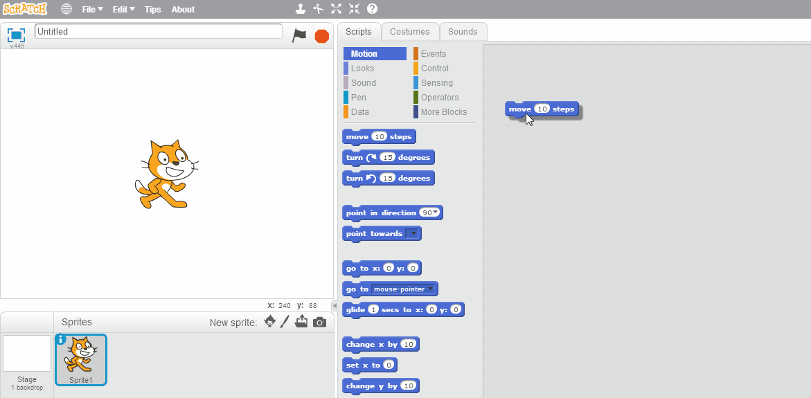

Bienvenido a Locos por Scratch.
Es sitio se dedica a la difusion de Programacion para niños y niñas en Scratch y otras plataformas.
Scratch es un lenguaje de programación creado por el MIT y especialmente diseñado para que todo el mundo pueda iniciarse en el mundo de la programación, aunque está pensado para chicos de 3 a 99 años. Sirve para crear historias interactivas, juegos y animaciones; además de facilitar la difusión de las creaciones finales con otras personas vía Web.
El nombre proviene de la palabra: “Scratching” que en los lenguajes de programación, significa aquellos trozos de código que pueden ser reutilizados, fácilmente combinables y adaptados para nuevos usos. Es un lenguaje que ha tenido una enorme difusión gracias a su gratuidad (es software libre) y a su facilidad de uso.

En Scratch, para programar, lo que tenemos que hacer es arrastrar los bloques, y encastrarlos con otros para crear estructuras complejas. Este lenguaje, permite el uso de loops, variables y condicionanes, como cualquier otro lenguaje serio de programacion
Si bien Scratch es probablemente la plataforma mas famosa para que los más chicos se inicien en el mundo de la programación, no es la única, aunque quizas es la más usada debido a su uso de bloques para programar y su interface simple e intuitiva.